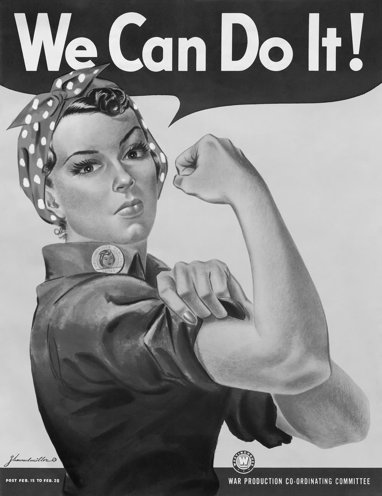
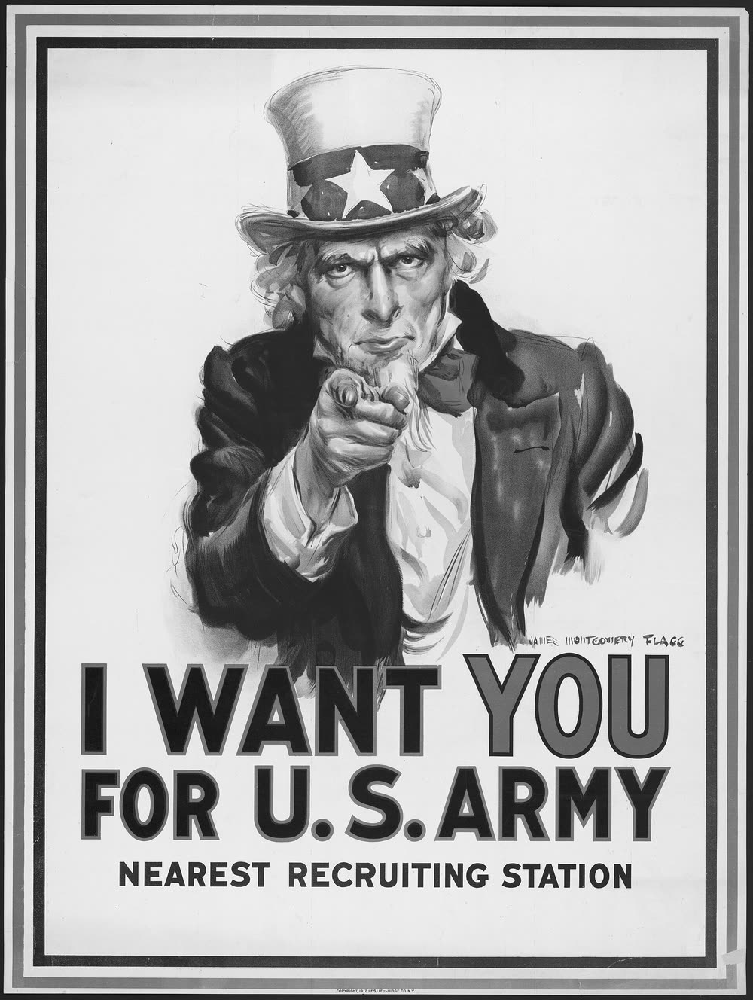
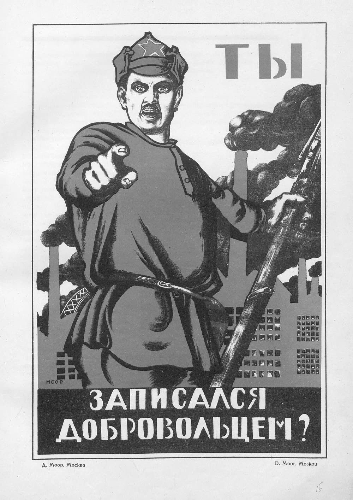
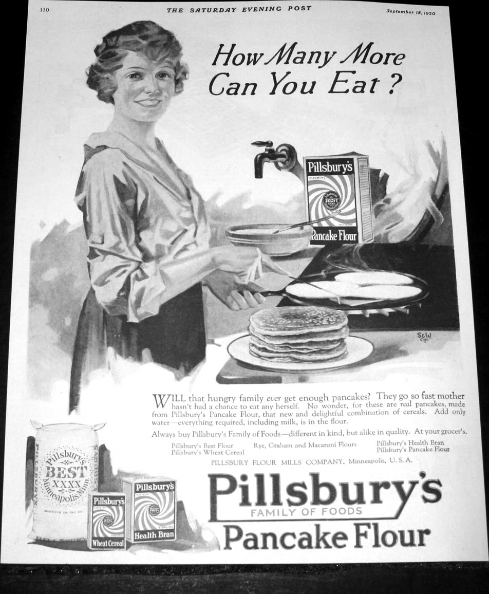
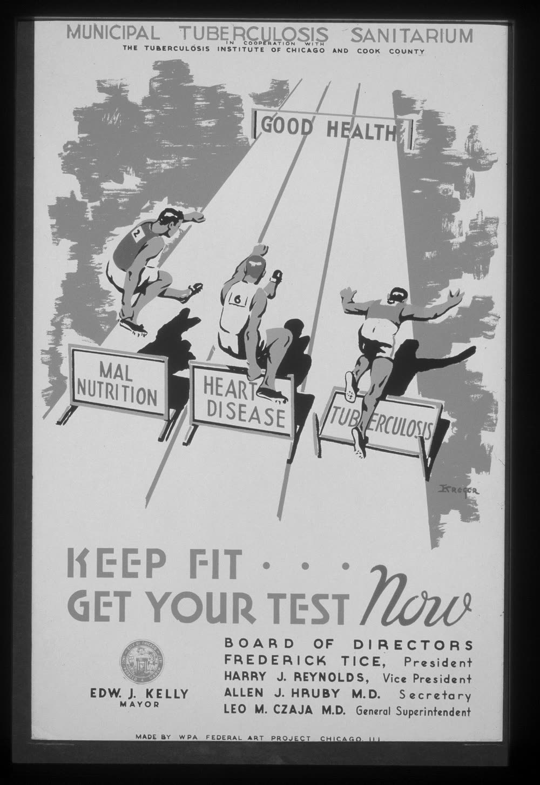
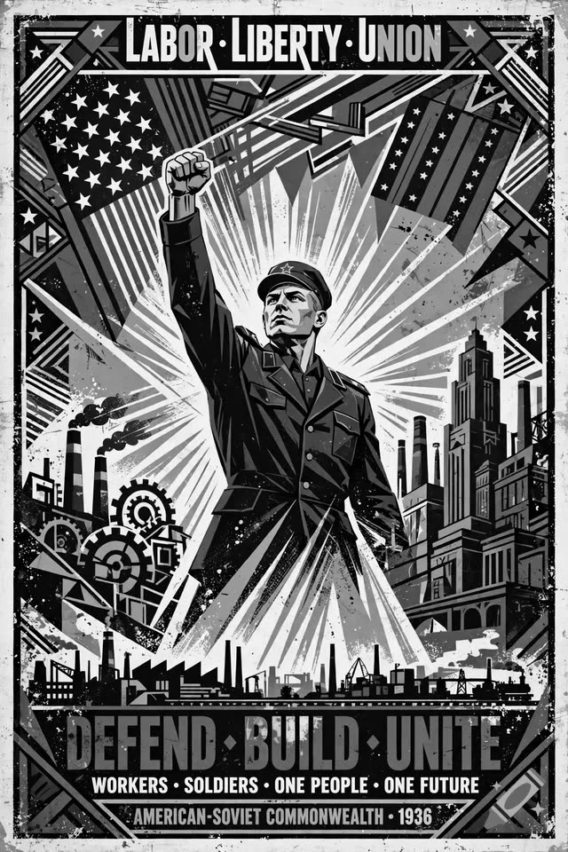

Al imprimir, pon Márgenes: Ninguno y desactiva «Encabezados y pies de página».
El Mundo Nuestro
Taller de carteles Portada
Nombre: Período: Fecha:
El taller de carteles
Diez días para convencer a alguien de algo que te importa
Nota de la jefa de redacción
En el periódico te pedí que no tomaras partido. Que preguntaras, que citaras exacto, que
dejaras que el lector decidiera. Ese trabajo se acabó.
Este mes el taller imprime carteles. Un cartel no informa: convence. Tiene siete palabras y
tres segundos para meterse en la cabeza de quien pasa.
Primero vas a desarmar ocho carteles de verdad — de guerras, de huelgas, de anuncios, y uno
que no hizo ninguna persona. Después escoges algo en lo que crees y haces el tuyo.
Tu calendario
Firmo cada paso cuando lo terminas. Los días de bloque son de
taller: traes todo y trabajas la hora completa.
Día
Clase
Paso
Qué haces
Hoja
Firma
1
Lunes
50′
¿Qué es la propaganda?
Leer, y comparar dos carteles hechos para la misma gente
pp. 2–3
2
Martes
50′
La caja de herramientas
Las diez técnicas, y el mismo dedo desde dos países
pp. 4–5
3
Bloque80′
Taller 1 · Vender y avisar
Anuncio contra salud, el cartel falso, y tu causa
pp. 6–8
4
Viernes
50′
Tu causa
La prueba del cartel y la propuesta
p. 9
5
Lunes
50′
El eslogan
Mandatos: tú, usted, nosotros
p. 10
6
Martes
50′
La imagen
Un símbolo, un foco, tres segundos
p. 11
7
Bloque80′
Taller 2 · Borrador
El cartel completo a lápiz
p. 12
8
Viernes
50′
La prueba de 3 segundos
Edición entre compañeros y plan de cambios
p. 13
9
Lunes
50′
Taller 3 · Cartel final
La versión final, con color
p. 14
10
Martes
50′
La defensa
Defensa escrita, contracartel y reflexión
pp. 15–16
La Corresponsal · El taller de cartelesPágina 1 de 16
El Mundo Nuestro
Día 1 ¿Qué es la propaganda?
Nombre: Período: Fecha:
¿Qué es la propaganda?
Día 1 — Lee y subraya
1La palabra suena a película vieja: un dictador, una bandera, una radio.
Pero propaganda es cualquier mensaje hecho para que pienses algo y hagas algo. No tiene que
ser mentira. Mucha propaganda dice la verdad; lo que hace es decir una parte de la
verdad, muy fuerte, y callar el resto.
2Piensa en tres mensajes sobre la misma fábrica. «La fábrica abre a las
seis» es información: no quiere nada de ti. «Trabaja con nosotros: buen
sueldo» es un anuncio: quiere tu firma o tu dinero. «¡Nosotros podemos
hacerlo!» es propaganda: quiere que te sientas parte de un lado y que
actúes. Los tres usan las mismas herramientas.
3En 1943, en Estados Unidos, una empresa de electricidad imprimió un
cartel con una trabajadora enseñando el brazo. Decía We Can Do It: nosotros podemos.
Ese «nosotros» incluía a la empresa, y lo que pedía era producir más.
4Veinte años después, en California, el sindicato de campesinos imprimió
otro cartel para trabajadores. Un águila negra y dos palabras: ¡Viva la huelga! Ese
«nosotros» eran los que cortaban la uva, y lo que pedía era exactamente lo contrario:
dejar de trabajar.
5Los dos le hablan al mismo tipo de persona. Los dos la dibujan grande y
fuerte. Por eso la pregunta con la que vas a leer todo este mes no es «¿es bonito?» ni «¿es
verdad?», sino: ¿quién pagó este cartel, y qué quiere que yo haga?
Después de leer
Escribe la diferencia entre información, anuncio y propaganda, con tus palabras.
¿Dónde viste propaganda esta semana? Puede ser un cartel, un video o una
publicación.
La Corresponsal · El taller de cartelesPágina 2 de 16
El Mundo Nuestro
Día 1 Dos carteles, la misma gente
Nombre: Período: Fecha:
Los dos le hablan al que trabaja
Día 1 — Y le piden cosas contrarias
Míralos tres segundos cada uno, como si pasaras caminando. Después contesta
las cuatro preguntas para cada cartel.

«We Can Do It!» Cartel con derechos de autor:
proyéctalo desde la carpeta de la clase
«We Can Do It!» · J. Howard Miller para Westinghouse, Estados Unidos, 1943
National Archives · dominio público
«¡Viva la huelga!» Cartel con derechos de autor:
proyéctalo desde la carpeta de la clase
«¡Viva la huelga!» · United Farm Workers, California, años sesenta
Con derechos de autor · sólo para uso en clase
Pregunta
«We Can Do It!» (1943)
«¡Viva la huelga!» (años 60)
¿Qué ves primero?
¿Quién es «nosotros»?
¿Qué quiere que hagas?
¿Qué no te dice?
Uno lo pagó una empresa y pide más trabajo. El otro lo pagó un sindicato
y pide parar el trabajo. Los dos dibujan al trabajador fuerte, y los dos dicen
«nosotros».
¿Cuál te convenció más? Di por qué, y nombra una cosa del dibujo que te
convenció.
La Corresponsal · El taller de cartelesPágina 3 de 16
El Mundo Nuestro
Día 2 Las diez técnicas
Nombre: Período: Fecha:
La caja de herramientas
Día 2 — Diez técnicas con nombre
Con nombre se ven. Sin nombre funcionan. Léelas y, en la última columna, apunta
dónde has visto cada una — en un cartel, un anuncio, un video o la boca de alguien que conoces.
Técnica
Cómo funciona
Dónde la he visto
el eslogan
Una orden corta que se queda pegada. Casi siempre es un mandato: ¡Únete! ¡No compres! ¡Apaga!
la repetición
La misma palabra o la misma forma vuelve, hasta que suena a verdad.
el nosotros
Te mete en un grupo al que ya perteneces: «we», «nuestra causa», «la fábrica somos todos».
el ellos
Alguien tiene la culpa — un país, una empresa, una enfermedad — y nunca es quien hizo el cartel.
el tú directo
Te mira, te señala, te habla de tú: «I want YOU», «¿Tú te has alistado?»
la imagen heroica
Una persona grande, fuerte, vista desde abajo. Nadie está cansado ni tiene miedo.
el dato
Un número exacto que suena a prueba. A veces lo es; a veces nadie lo revisa.
todos lo hacen
Si todos ya firmaron, ya compraron, ya se unieron, ¿qué esperas tú?
la llamada
Te dice exactamente qué hacer y dónde: firma, preséntate, hazte la prueba, no compres.
el humor
Te hace reír, y lo que te hace reír se te queda. Cuesta enojarse con un chiste.
Ninguna de estas técnicas es mala por sí sola. Un cartel de vacunas y un cartel
de guerra usan las mismas. Lo que cambia es para qué, y quién gana.
La Corresponsal · El taller de cartelesPágina 4 de 16
El Mundo Nuestro
Día 2 El mismo dedo
Nombre: Período: Fecha:
El mismo dedo, dos países enemigos
Día 2 — 1917 y 1920

«I Want You for U.S. Army» Cartel con derechos de autor:
proyéctalo desde la carpeta de la clase
«I Want You for U.S. Army» · James Montgomery Flagg, Estados Unidos, 1917 · Te quiero a TI para el ejército
Library of Congress · dominio público

«¿Tú te has alistado como voluntario?» Cartel con derechos de autor:
proyéctalo desde la carpeta de la clase
«¿Tú te has alistado como voluntario?» · Dmitri Moor, Rusia soviética, 1920 · «¿Tú te has alistado como voluntario?»
Dominio público
Tres años y nueve mil kilómetros separan estos dos carteles. Los países iban a
ser enemigos casi todo el siglo. Marca las técnicas que encuentres en cada uno.
Cartel de la izquierda · Estados Unidos, 1917
☐ el eslogan☐ la repetición☐ el nosotros☐ el ellos☐ el tú directo☐ la imagen heroica☐ el dato☐ todos lo hacen☐ la llamada☐ el humor
Cartel de la derecha · Rusia soviética, 1920
☐ el eslogan☐ la repetición☐ el nosotros☐ el ellos☐ el tú directo☐ la imagen heroica☐ el dato☐ todos lo hacen☐ la llamada☐ el humor
Lo que comparten
¿Qué hacen los dos con los ojos y la mano?
¿Por qué sientes que te habla a ti?
Si los dos usan el mismo truco, ¿quién tenía la razón?
Esa última pregunta no tiene respuesta corta, y ése es el punto: la técnica no
te dice quién tiene la razón. Sólo te dice que alguien quiere algo de ti.
La Corresponsal · El taller de cartelesPágina 5 de 16
El Mundo Nuestro
Día 3 · Bloque Taller 1 (1 de 3)
Nombre: Período: Fecha:
Vender harina, avisar de una enfermedad
Día 3 — Las mismas herramientas, dos intenciones

«How Many More Can You Eat?» Cartel con derechos de autor:
proyéctalo desde la carpeta de la clase
«How Many More Can You Eat?» · Anuncio de Pillsbury, The Saturday Evening Post, 18 de septiembre de 1920
Dominio público

«Keep Fit — Get Your Test Now» Cartel con derechos de autor:
proyéctalo desde la carpeta de la clase
«Keep Fit — Get Your Test Now» · WPA Federal Art Project, Chicago, hacia 1939
Library of Congress · dominio público
Pregunta
El anuncio (1920)
La salud pública (1939)
¿Qué ves primero?
¿Quién es «nosotros»?
¿Qué quiere que hagas?
¿Qué no te dice?
La pregunta difícil
Los dos te dan una orden y los dos te enseñan gente feliz y sana. ¿Por qué uno
nos parece bien y el otro no? No hay una sola respuesta correcta; defiende la tuya.
La Corresponsal · El taller de cartelesPágina 6 de 16
El Mundo Nuestro
Día 3 · Bloque Taller 1 (2 de 3)
Nombre: Período: Fecha:
El cartel que nunca existió
Día 3 — Lo hizo una máquina, este año

«Labor · Liberty · Union» Cartel con derechos de autor:
proyéctalo desde la carpeta de la clase
«Labor · Liberty · Union» · Dice «American-Soviet Commonwealth, 1936». No existió nunca
Imagen generada por inteligencia artificial, 2026
Este cartel parece de 1936 y parece soviético. No lo es. Lo generó una
inteligencia artificial en 2026, y la «mancomunidad americano-soviética» que anuncia nunca
existió: nunca hubo un país así.
Acércate y búscale las costuras.
Una palabra que se deshace
Algo que no cuadra en el dibujo
Lo que sí logra: ¿qué sentimiento te da?
Cómo se revisa un cartel viejo
Las letras
Acércate. Las máquinas todavía
inventan letras que no son letras, sobre todo chiquitas.
Los datos
¿El país, el año y la organización existieron?
Eso se busca en treinta segundos.
El autor
Un cartel real casi siempre tiene imprenta, sindicato
o gobierno impreso en alguna esquina.
De dónde salió
¿Lo tiene un museo o un archivo, o nada más
apareció en una red social?
Tu propio bolsillo
Algo que viste en tu teléfono esta semana y que quería convencerte de algo.
¿Qué era y qué técnica usaba?
¿Quién ganaba si le hacías caso?
La Corresponsal · El taller de cartelesPágina 7 de 16
El Mundo Nuestro
Día 3 · Bloque Taller 1 (3 de 3)
Nombre: Período: Fecha:
Escoge tu causa
Día 3 — Algo en lo que crees de verdad
Anota por lo menos dos ideas en cada recuadro. No te censures todavía: la
prueba viene después.
Algo que cambiaría de esta escuela
Algo que pasa en mi barrio
Algo de mi cultura que la gente no entiende
Algo del trabajo o del dinero
Algo de la salud o del planeta
Algo que me da coraje y nadie dice
La prueba del cartel
Escoge tus dos mejores ideas y márcalas. La que pase las cinco es tu causa.
Pregunta
Idea 1
Idea 2
¿Es una causa real, que me importa de verdad?
¿La puedo decir en siete palabras o menos?
¿Hay algo que quiero que la gente haga?
¿La puedo dibujar con un solo símbolo?
¿Se puede colgar en el pasillo de esta escuela?
Tres bocetos de un minuto
Antes de salir hoy: tres dibujos rápidos, un minuto cada uno. Feos está bien.
boceto
boceto
boceto
La Corresponsal · El taller de cartelesPágina 8 de 16
El Mundo Nuestro
Día 4 La propuesta
Nombre: Período: Fecha:
Propón tu cartel
Día 4 — Nadie imprime sin permiso
Llena la propuesta con la idea que pasó la prueba. Yo la apruebo o te pido
cambios antes de que empieces a dibujar.
Mi causa, en una oración
¿Por qué me importa a mí?
¿A quién le hablo? (mi público)
¿Qué quiero que esa persona haga?
Un dato o un hecho que lo apoya
El símbolo que podría usar
Tu público
Un cartel para toda la escuela no convence a nadie. Escoge una persona real y
escríbele a ella: un estudiante de noveno, una maestra, tu tío, el director.
estudiantes de esta escuela · familias · maestros
· vecinos · la administración · alguien que no está de acuerdo
Sólo para tu profe
☐ Aprobada tal como está ☐ Aprobada con cambios
☐ Busca otra causa
Firma: ____________________________
La Corresponsal · El taller de cartelesPágina 9 de 16
El Mundo Nuestro
Día 5 El eslogan
Nombre: Período: Fecha:
El eslogan
Día 5 — Siete palabras o menos, y casi siempre un mandato
Los eslóganes mandan: ¡Únete! ¡No compres! ¡Apágala! Eso es un
mandato, y cambia según a quién le hables.
Verbo
A un compañero (tú)
A un adulto (usted)
A todos (nosotros)
unirse
¡Únete!
¡Únase!
¡Unámonos!
luchar
¡Lucha!
¡Luche!
¡Luchemos!
cuidar
¡Cuídalo!
¡Cuídelo!
¡Cuidémoslo!
apagar
¡Apágala!
¡Apáguela!
¡Apaguémosla!
firmar
¡Firma!
¡Firme!
¡Firmemos!
preguntar
¡Pregunta!
¡Pregunte!
¡Preguntemos!
callarse
¡No te calles!
¡No se calle!
¡No nos callemos!
El acento del mandato: cuando le pegas un pronombre al final, la
palabra crece y pide acento escrito: cuida → cuídalo, apaga → apágala,
une → únete. Dilo en voz alta: el golpe no se movió, pero la palabra sí. En negativo el
pronombre se va adelante y el acento se cae: ¡No te calles!
Escribe cinco
Cinco eslóganes para tu causa. Siete palabras o menos. Por lo menos tres tienen
que empezar con un mandato. Uno tiene que hablarle de usted.
La Corresponsal · El taller de cartelesPágina 10 de 16
El Mundo Nuestro
Día 6 La imagen
Nombre: Período: Fecha:
Un símbolo, un foco, tres segundos
Día 6 — Y a veces, un chiste
«Sister Boom Boom for Supervisor» Cartel con derechos de autor:
proyéctalo desde la carpeta de la clase
«Sister Boom Boom for Supervisor» · Campaña municipal, San Francisco, 2 de noviembre de 1982
Con derechos de autor · sólo para uso en clase
San Francisco, 1982: una candidata de protesta, una monja en una escoba.
No ganó, pero sacó más de veinte mil votos. Su técnica es la décima de la lista:
el humor.
¿Qué ves primero?
¿Qué te pide, y cuándo?
¿Qué NO te dice?
Cuesta enojarse con un chiste. Por eso el humor convence a gente que ya
había decidido no escucharte.
Las cuatro cosas que hacen que un cartel funcione
Un símbolo
Uno. El águila de la huelga, el
brazo, la escoba. No cinco cosas a la vez.
Un foco
Lo más importante es lo más grande, y está cerca del centro.
Letras de lejos
Gruesas, derechas, pocas.
Un dato chiquito
Abajo, para quien se acerque.
Tu símbolo y tus letras
Escribe tres objetos que podrían representar tu causa y encierra el que se
entienda sin explicación. Después practica tu eslogan con letras de palo, gruesas.
Tu composición
símbolo arriba
letras arriba
símbolo gigante
La Corresponsal · El taller de cartelesPágina 11 de 16
El Mundo Nuestro
Día 7 · Bloque Taller 2
Borrador a lápiz. El cartel completo:
eslogan, símbolo, dato y llamada. A lápiz, para poder borrar. A la media hora paramos y alguien
más lo ve. Nombre: ______________________ Período: __________
tu cartel · a lápiz
Mi eslogan dice
Mi símbolo es
Quiero que hagan
Mis dos técnicas son
La Corresponsal · El taller de cartelesPágina 12 de 16
El Mundo Nuestro
Día 8 La prueba de 3 segundos
Nombre: Período: Fecha:
La prueba de tres segundos
Día 8 — Nadie se para a estudiar un cartel
Le enseñas tu borrador a un compañero tres segundos y lo tapas.
Él contesta de memoria, sin volver a verlo. Tú llenas esta hoja con lo que te diga: no discutas,
sólo apunta. Si no vio lo que querías, el problema es del cartel, no de sus ojos.
Mi cartel lo vio
¿Qué viste primero?
¿De qué crees que trata?
¿Qué quiere que hagas?
¿Qué palabra se te quedó?
Lo que yo quería que pasara
Yo quería que viera…
Lo que vio de verdad
Plan de cambios
Tres cambios concretos para la versión final. «Hacerlo mejor» no es un cambio;
«poner el eslogan arriba y el foco más grande» sí lo es.
Si tu compañero tardó en entenderlo, no le expliques: anótalo. En el pasillo no
vas a estar tú para explicar.
La Corresponsal · El taller de cartelesPágina 13 de 16
El Mundo Nuestro
Día 9 · Taller 3 Cartel final
Versión final. Con color, con las
letras gruesas, con tu nombre chiquito abajo a la derecha como firma del autor. Si tienes papel
más grande, usa esta página como plano y pásalo. Nombre: ______________________
cartel final
Firma del autor ↗
La Corresponsal · El taller de cartelesPágina 14 de 16
El Mundo Nuestro
Día 10 La defensa
Nombre: Período: Fecha:
Defiende tu cartel
Día 10 — Por escrito, como si te lo pidiera la editora
Entre 80 y 120 palabras. Tiene que contestar las cuatro: cuál es tu causa, a
quién le hablas, qué dos técnicas usaste y por qué escogiste ese símbolo.
Mi cartel trata de… · Le hablo a… · Usé la técnica
de… porque… · Escogí este símbolo porque… · Quiero que…
El contracartel
Ahora el otro lado. Alguien no está de acuerdo contigo y tiene dinero para
imprimir. Con las mismas diez técnicas, ¿qué cartel haría contra el tuyo?
Su eslogan sería
La técnica que usaría
Su símbolo sería
Lo que su cartel NO diría
Esta es la parte que importa de todo el mes: las herramientas no tienen lado.
El que las conoce, las ve venir.
La Corresponsal · El taller de cartelesPágina 15 de 16
El Mundo Nuestro
Día 10 Reflexión
Nombre: Período: Fecha:
Mira lo que hiciste
Día 10 — Reflexión y autoevaluación
1 · Del borrador al final
El cambio más grande que hice
Por qué lo hice
2 · Piensa
¿Qué técnica usaste tú, de las diez, y por qué ésa?
Después de este mes, ¿qué vas a mirar distinto cuando veas un anuncio?
3 · Califica tu cartel
Encierra un número en cada fila. Tu profe usa la misma tabla.
Criterio
3 · Lo logré
2 · Casi
1 · Todavía no
Causa
Es real, es mía y se entiende de un vistazo
Se entiende, pero es muy general
No se sabe de qué trata
Eslogan
Siete palabras o menos, con un mandato
Largo o sin mandato
No hay eslogan
Imagen
Un símbolo, un foco, se lee en 3 segundos
Se lee, pero compite consigo mismo
No se entiende la imagen
Técnica
Uso dos técnicas y las puedo nombrar
Uso una
No puedo nombrar ninguna
Proceso
El borrador y el final son distintos, y mejor
Cambié poco
Pasé el borrador en limpio
Total: _______ / 15
Tu cartel se queda colgado. Alguien que no conoces va a pasar por el pasillo, lo
va a ver tres segundos y va a pensar en tu causa. Eso es todo el oficio.
La Corresponsal · El taller de cartelesPágina 16 de 16